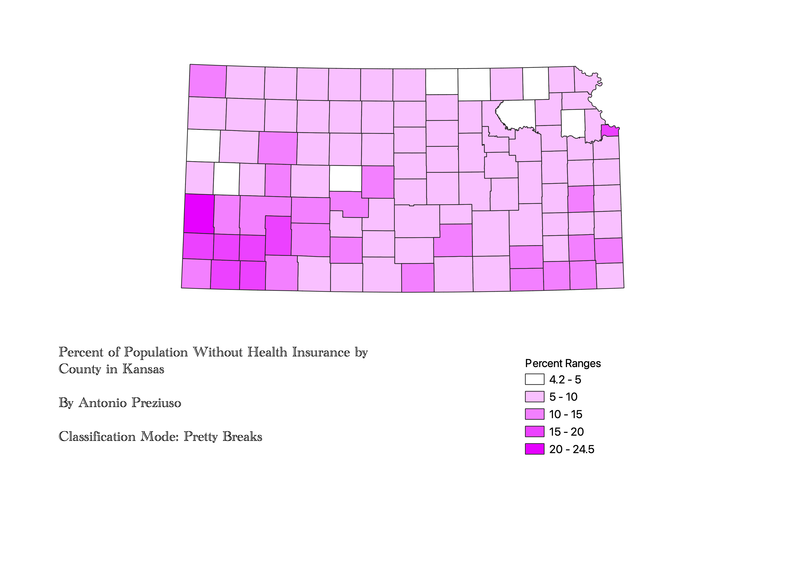

Homework 6: Ratios and classifications by Antonio Preziuso
Ratio Used: For this homework, I created a ratio that took the amount of people in each county in Kansas who were uninsured and divided it by the total number of people in each respective county. This created a percent of total population without health insurance for each county. I used this ratio in particular because it removes the issue of some counties having naturally more people in them than others. With this ratio, we can capture a more accurate glimpse of which areas' populations actually suffer from a lack of health insurance.
This version uses Equal Count (Quantile) for its classification mode. This kind of classification mode is useful as it tries to spread the same amount of features across all classes. A pro of this is that it creates an even appearence of shading on the chloropleth map. However, a con of Equal Count (Quantile) is that it can mislead people who view the map. This is beacause many tend to look at one shade and then group all areas of that color as if they are impacted equally.
.png)
This version uses Equal Interval for its classification mode. This kind of classification mode is useful as it can emphasize the prevelance of a certain value relative to other values. This is good for showing patterns, trends, etc. However, in our case, the Equal Interval mode of classification causes there to be an unequal count of counties per class, failing to recognize distribution along the number line.

This version uses Pretty Breaks for its classification mode. This kind of classification mode is useful as it rounds each break-point in the range up or down. A benefit of this is that it allows for very clear and comprehensible ranges on your legend for the chloropleth map, allowing viewers to quickley understand what each color represents. A drawback of this classification mode is that it does not work well if you have a specific amount of classes you would like to create. Moreover, this classification mode is much better for large numbers that look neater when rounded.

Data used for this project
CSV dataset
https://github.com/apreziuso123/GEOG370HW6Pt2